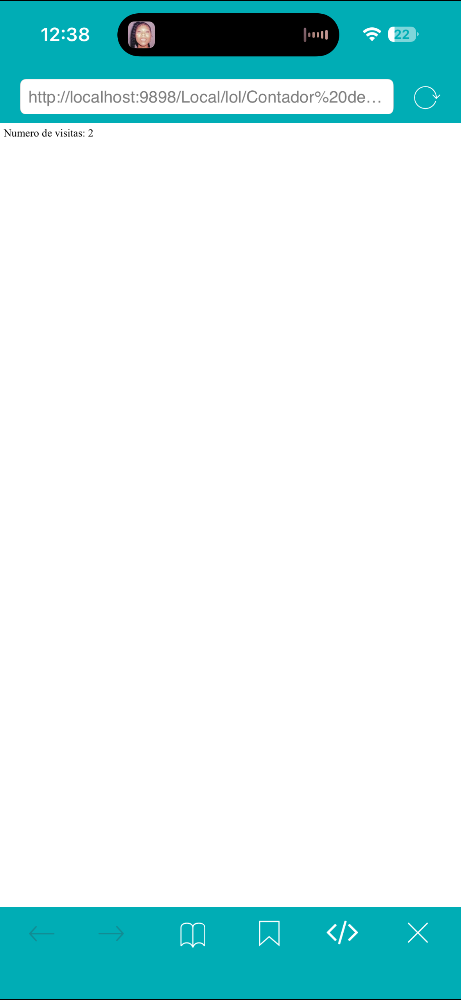
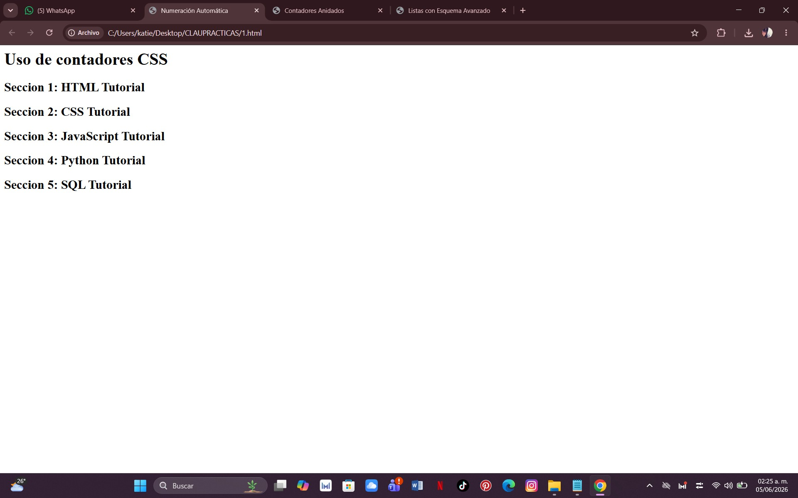
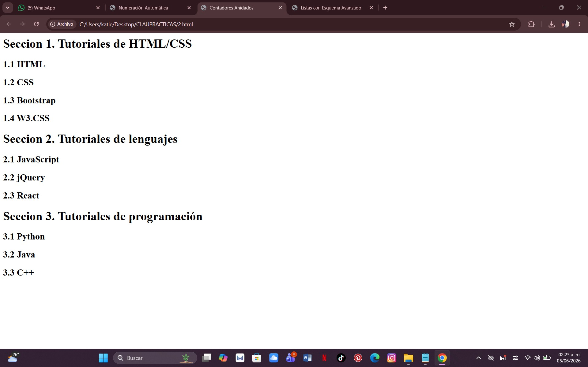
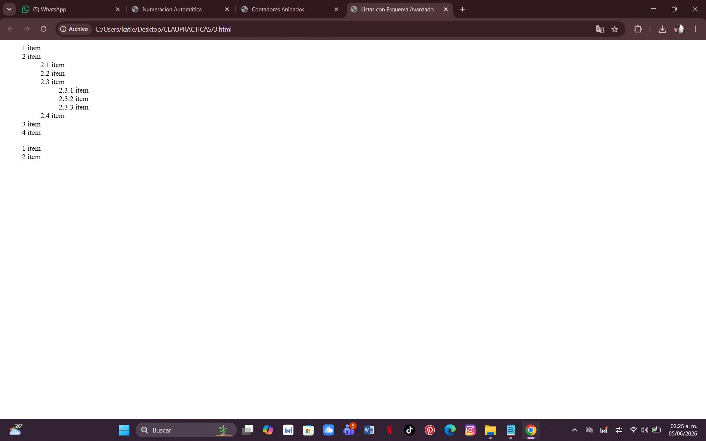

¿Qué hice?
En esta práctica desarrollé un contador de visitas utilizando JavaScript. El sistema registra el número de veces que se visita la página web mediante cookies y muestra el total de visitas realizadas por el usuario.
Comandos utilizados:

Qué se hizo: Se creó una numeración automática en los títulos h2 usando contadores CSS, haciendo que cada sección se numere sola.
Comandos usados:

Qué se hizo: Se crearon contadores automáticos en títulos.
Comandos usados:

Qué se hizo: Se crearon listas con numeración jerárquica.
Comandos usados: